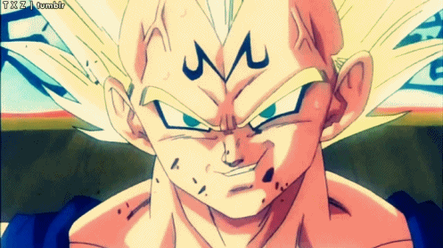

Vegeta
Vegeta (ベジータ, Bejīta) est l'un des personnages principaux de la licence. Il est le prince de la planète Vegeta, fils du Roi Vegeta. Il est le mari de Bulma et le père de Trunks et Bra. Prince des Saiyans, il est d'abord introduit comme un antagoniste lors la Saga des Saiyans, avant de devenir progressivement un allié des héros lors de la Saga de Namek, puis l'un des protagonistes principaux dès la Saga des humains artificiels. Orgueilleux, Vegeta devient l'incarnation de l'anti-héros, ainsi que le rival attitré de Son Gokû au cours de l'histoire.